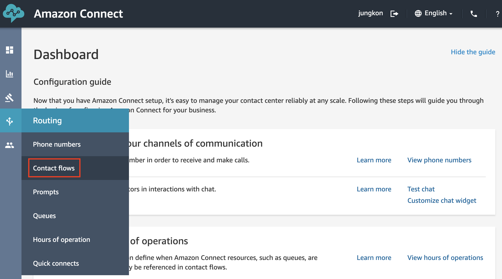
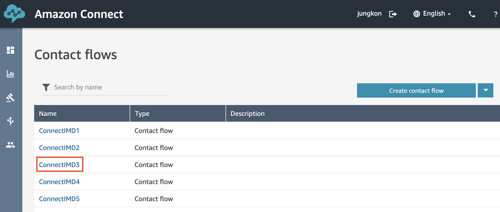
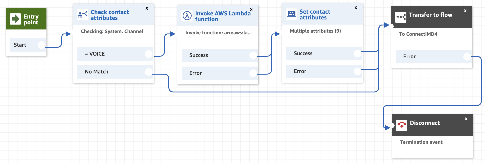
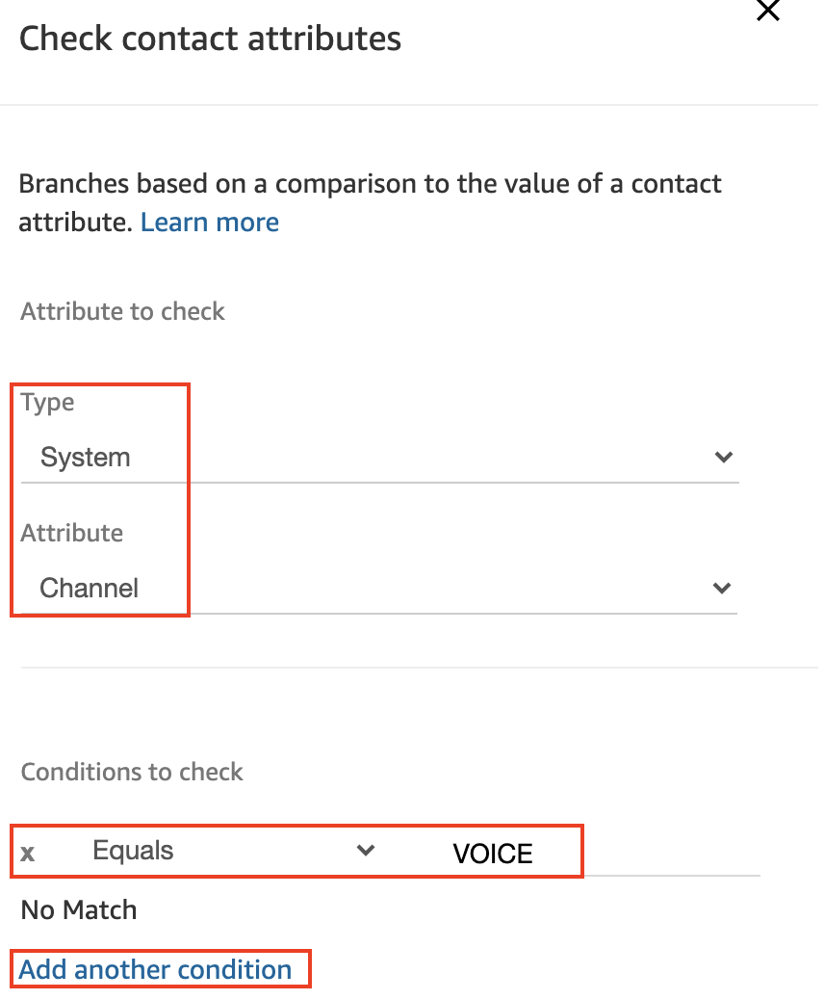
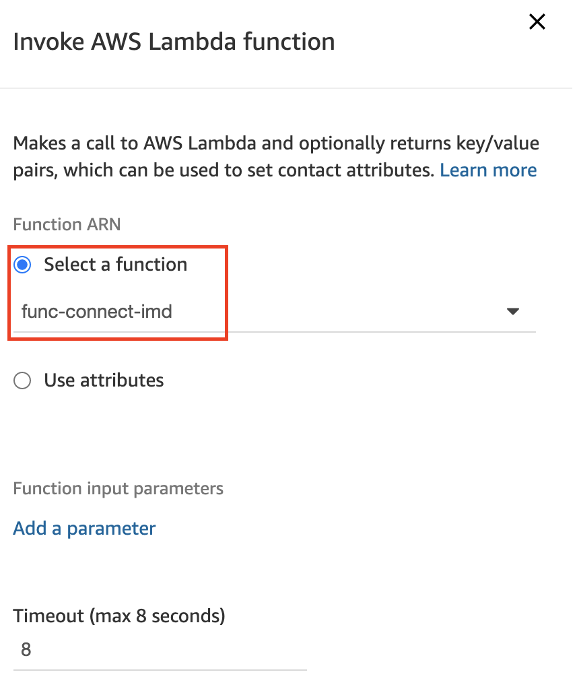
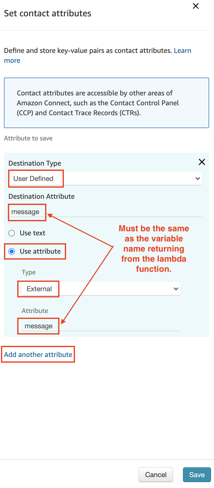
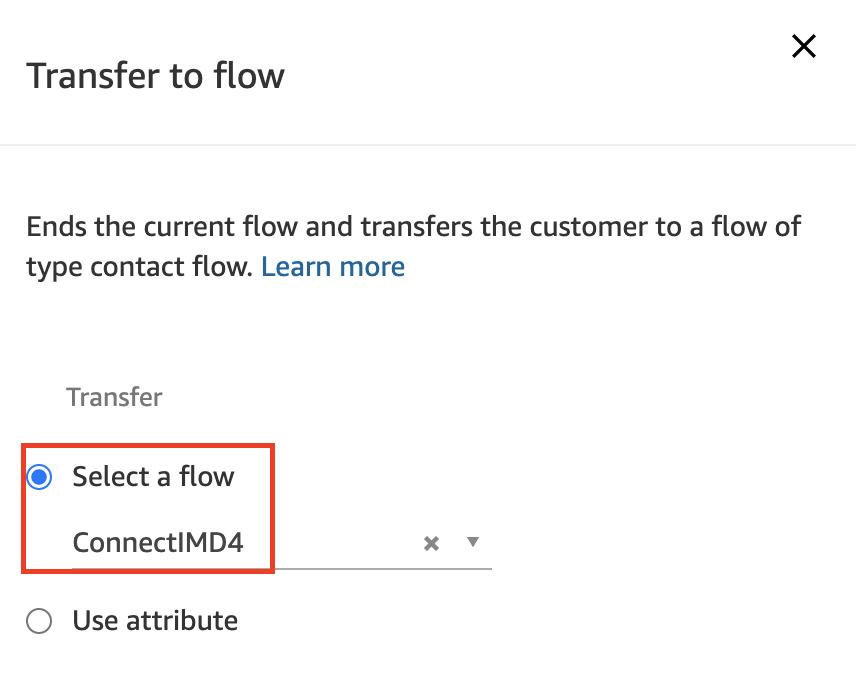

Contact Flow 구성
Contact Flow에서 Lambda 를 호출하여 Dynamo DB 의 고객 정보를 가져옵니다. 가져온 고객 정보는 이후 Contact Flow 내에서 계속해서 사용할 수 있도록 Set contact attributes Command Block 을 이용해서 attributes 로 저장합니다.
- Connect 콘솔로 접속하여 Contact flows 메뉴로 이동합니다. 
AWS 콘솔이 아닌 Connect 콘솔로 접속해야합니다. (https://[인스턴스 생성 시 지정한 도메인 이름].my.connect.aws/)
-
ConnectIMD3 Contact Flow 를 클릭합니다. 
-
아래와 같은 Contact Flow 를 작성합니다. 다음 항목을 참고하여 차례대로 작성하고 Command Block 들 간의 연결도 빠짐없이 연결해줍니다. 
-
Check contact attributes Command Block 을 왼쪽 리스트 중 Branch 메뉴에서 Drag&Drop 으로 편집 화면으로 가져옵니다. Type 과 Attribute 를 지정하고 Add another condition을 클릭하여 Eqauls, VOICE 로 각각 설정합니다. Save 버튼을 클릭하여 설정을 저장합니다. 여기에서는 기본 저장된 Attributes 정보 들 중 Channel 정보를 확인합니다. VOICE, CHAT, TASK 와 같은 항목 중 하나이며 해당 시나리오에서는 전화로 입입했을 경우인 VOICE 에 대해 별도의 분기처리를 합니다. 
-
Invoke AWS Lambda function Command Block 을 왼쪽 리스트 중 Integrate 메뉴에서 Drag&Drop 으로 편집 화면으로 가져옵니다. 이전에 생성한 Lambda 함수를 선택합니다. Save 버튼을 클릭하여 설정을 저장합니다. 여기에서는 생성해둔 Lambda 함수를 호출하여 고객 정보를 가져옵니다. 호출시 기본적으로 전화번호, 인스턴스 ID 등의 기본정보는 별도로 설정하지 않아도 Lambda 함수로 전달이 됩니다. 
-
Set conatct attributes Command Block 을 왼쪽 리스트 중 Set 메뉴에서 Drag&Drop 으로 편집 화면으로 가져옵니다. Add another attribute 를 클릭하여 Lambda 함수에서 리턴된 정보들을 저장할 attribute (변수)를 추가합니다. 총 8개의 attribute 를 추가해야합니다. 이때 Lambda 코드에서 리턴되는 정보를 기준으로 입력합니다. 아래 코드를 참고하여 모두 8개의 Attribute (message, firstname, lastname, birthdate, lastagent, status, casenumber, casedetail) 를 입력합니다. 이 중 message 는 Lambda 함수에서 DynamoDB의 정보를 조회하는 데 성공했는지를 판별할 수 있는 변수입니다. 나머지 7개는 DynamoDB에서 가져온 고객 정보에 해당하는 변수 들입니다. Save 버튼을 클릭하여 설정을 저장합니다.
#Return variables to Amazon Connect return {'message': 'Success', 'firstname' : firstname, 'lastname' : lastname, 'birthdate' : birthdate, 'lastagent' : lastagent, 'status' : status, 'casenumber' : casenumber, 'casedetail' : casedetail, } #If no match return a default message else: return { 'message': 'Fail'}
아래와 같이 모두 8개의 Attribute 들이 설정되었는 지 확인합니다.

-
Transfer to flow Command Block 을 왼쪽 리스트 중 Terminate / Transfer 메뉴에서 Drag&Drop 으로 편집 화면으로 가져옵니다. ConnectIMD4 로 설정합니다. Save 버튼을 클릭하여 설정을 저장합니다. 
고객 정보를 Lambda 함수로 가져왔습니다. 다음 장에서는 이 정보를 활용하여 고객을 확인하고 생년월일로 인증하는 시나리오를 구성합니다.